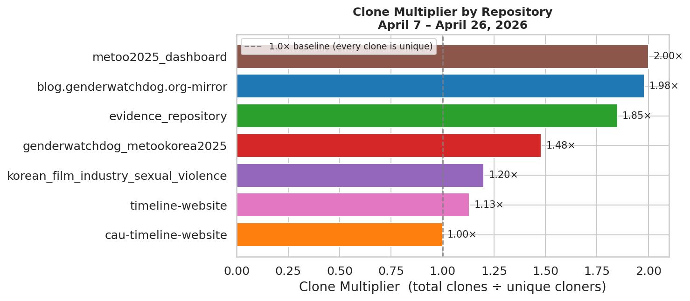
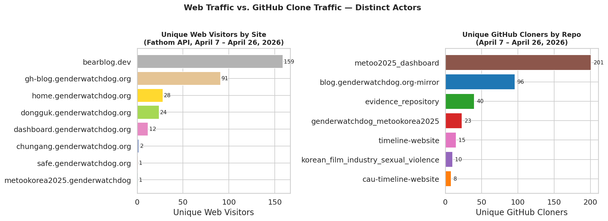
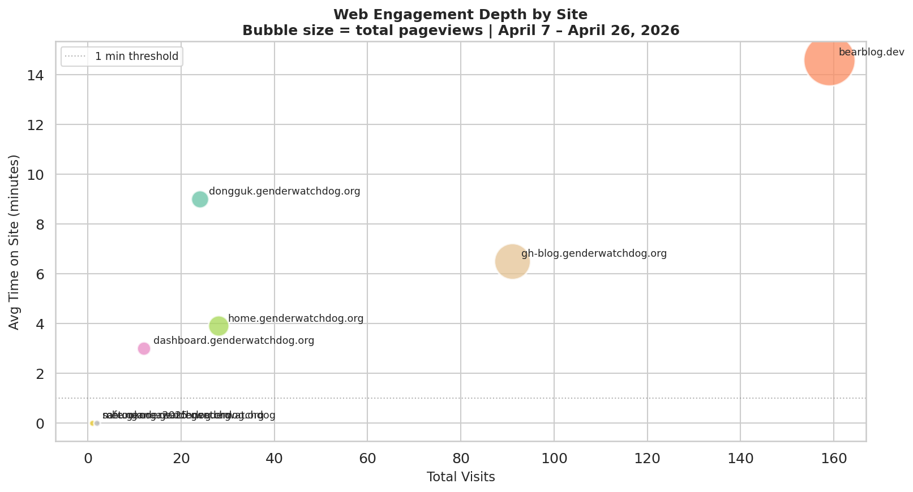
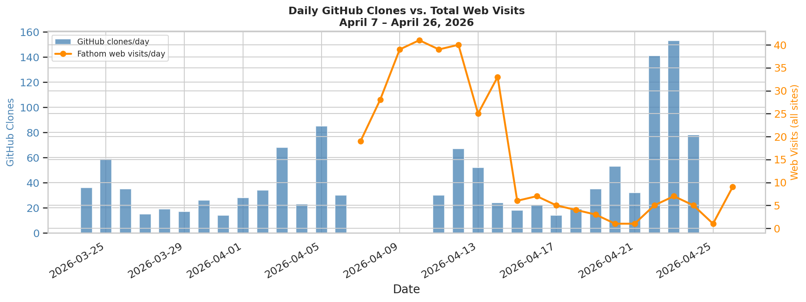

Period: 2026-04-07 to 2026-04-26
Generated: 2026-06-18
Source: Gender Watchdog Research Collective — Public Briefing
A clone is a full download of a repository — a deliberate act of preservation or research. A clone multiplier above 1.0× means the same actors are returning to pull a repo multiple times, which is the signature of institutional monitoring rather than one-time discovery.
| Repository | Clones | Unique Cloners | Multiplier |
|---|---|---|---|
| metoo2025_dashboard | 530 | 305 | 1.74× |
| blog.genderwatchdog.org-mirror | 267 | 143 | 1.87× |
| evidence_repository | 122 | 65 | 1.88× |
| genderwatchdog_metookorea2025 | 35 | 24 | 1.46× |
| timeline-website | 22 | 19 | 1.16× |
| korean_film_industry_sexual_violence | 16 | 13 | 1.23× |
| cau-timeline-website | 11 | 11 | 1.0× |
| Site | Visits | Uniques | Pageviews | Avg Duration | Bounce Rate |
|---|---|---|---|---|---|
| bearblog.dev | 159 | 159 | 240 | 14m33s | 88% |
| gh-blog.genderwatchdog.org | 91 | 91 | 118 | 6m32s | 90% |
| home.genderwatchdog.org | 28 | 28 | 39 | 3m55s | 79% |
| dongguk.genderwatchdog.org | 24 | 24 | 28 | 8m59s | 96% |
| dashboard.genderwatchdog.org | 12 | 12 | 17 | 3m01s | 67% |
| chungang.genderwatchdog.org | 2 | 2 | 2 | 0m01s | 100% |
| metookorea2025.genderwatchdog | 1 | 1 | 1 | — | 100% |
| safe.genderwatchdog.org | 1 | 1 | 2 | — | 0% |
Click any chart to view at full resolution.



